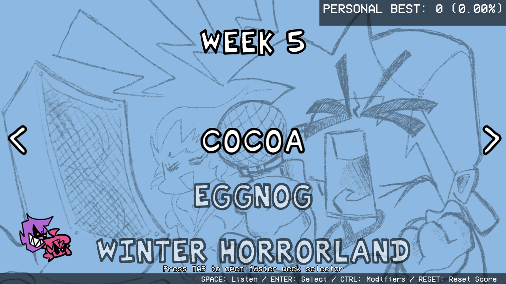
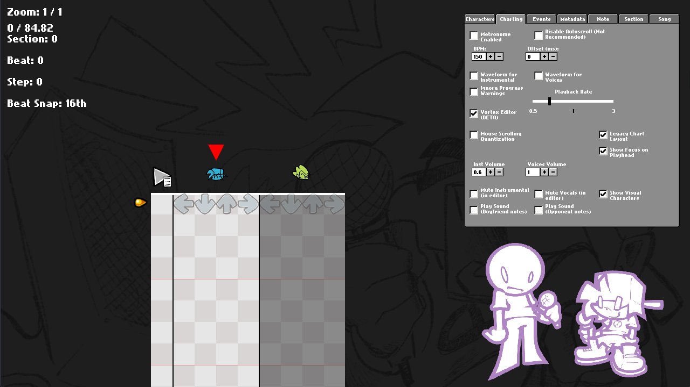
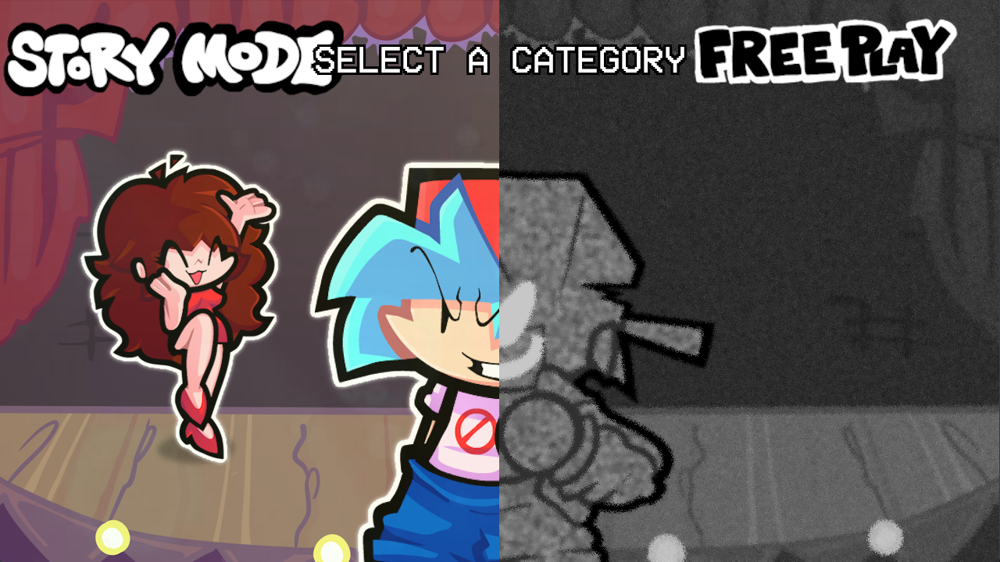
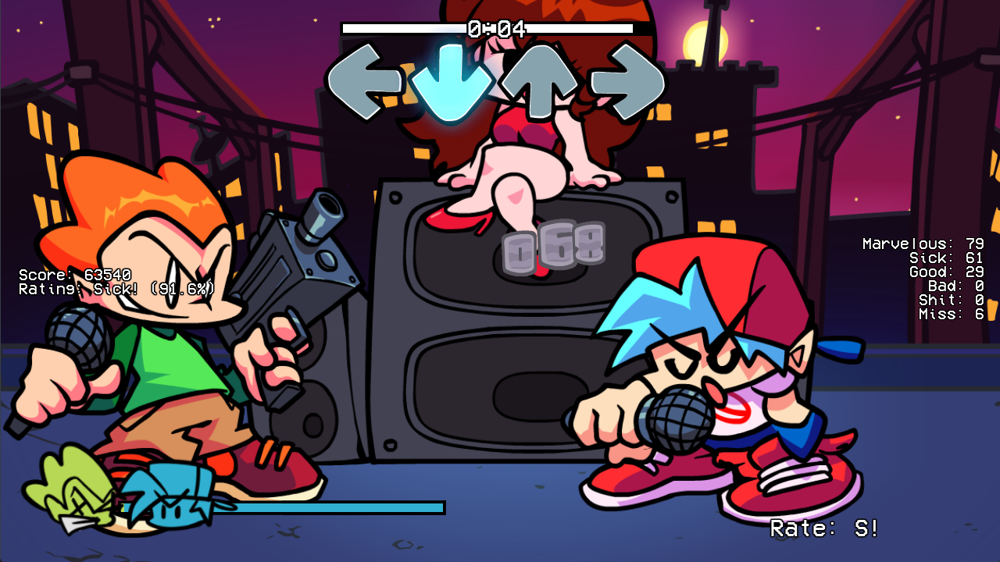
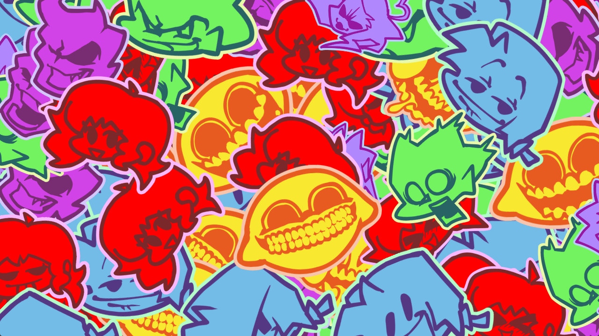

Friday Night Funkin' engine
Oasis Engine
A standalone engine based on Psych Engine 0.6.3, with native extra performers, a camera timeline editor, and a redesigned Freeplay.
Early, experimental development. APIs, chart formats, and editor behavior may change. Source version 0.2.8 does not identify an available public release.

Create with Oasis Engine
- Add extra performers and character lanes in the Chart Editor.
- Direct camera targets, zoom, and movement on a timeline.
- Browse Freeplay categories and weeks, with vocal previews and playback controls.
- Customize HUD layouts, icons, character scripts, and asset overrides.
Camera path handling and several editor-only fields have known limitations. Read the feature audit before relying on them in a release.
Documentation
These Markdown guides are included with the engine source and can be read in the repository or a Markdown viewer.
- Build Oasis Engine — dependencies, desktop targets, and recorded validation.
- Features and known limitations — engine additions and implementation evidence.
- Contributing — source checkout, changes, and issue reports.
- Release checklist — source, build, runtime, and distribution checks.
The source root also contains README.md, Modding.md, and LICENSE.
Engine screenshots




Screenshots illustrate engine interfaces. Content shown in a development screenshot does not define the assets included in an engine release.
Source and releases
kosziPL/oasis-engine is the official source for Oasis Engine code, documentation, releases, and issue tracking.